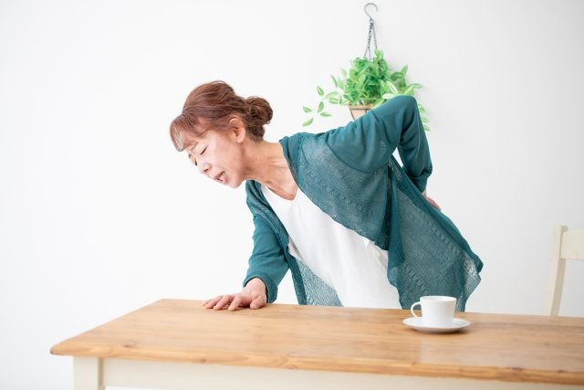

強い力で押したり、
ボキボキ鳴らしません
骨をひねったり、体重をかけて押し込むような施術はいたしません。お体の状態にあわせて力加減を調整し、その都度「痛くないですか」と確認しながら進めます。
聖蹟桜ヶ丘駅から徒歩4分
立ち上がるとき、階段を下りるとき、少し歩いたあと。
そのつらさを「年のせい」で終わらせずに、まずは体の状態を見せてください。
ご予約は不要です。思い立った日にそのままお越しください。お電話なら「膝が痛くて」とだけお伝えいただければ大丈夫です。
※ スッキリキャンペーン 初回 5,000円 → 1,980円（40分・税込）

スッキリキャンペーン
5,000円→1,980円
初回限定 / 40分 / 税込
さらに公式LINE登録で
「施術延長 無料券」プレゼント
Check

年齢は変えられません。
でも、体の使い方と動く範囲は変えられます。

Cause
膝は、上下をはさむ股関節と足首の動きに大きく左右される関節です。 股関節が硬くなり、足首の動きも小さくなると、その分を膝がひとりで受け止めることになります。
痛みをかばって歩く期間が長くなると、今度は反対側の脚や腰に負担が移り、 痛む場所が少しずつ増えていく——これはとてもよくある流れです。
歩く量が減ると筋力も落ち、さらに動きにくくなります。 この悪循環を、どこかで一度止めることが大切です。
当院はまず、立ち上がり方と歩き方を見せていただきます。 膝そのものだけでなく、股関節・足首・骨盤まで含めて、 負担のかかり方を変えていきます。
Point
骨をひねったり、体重をかけて押し込むような施術はいたしません。お体の状態にあわせて力加減を調整し、その都度「痛くないですか」と確認しながら進めます。
在籍する施術者は、全員が柔道整復師の国家資格をもっています。お体の状態をきちんと確認したうえで施術にあたります。
聖蹟桜ヶ丘駅の東口から平坦な道を4分ほど。院はマンションの1階にあり、階段を上らずにお入りいただけます。
Symptom
下記以外のことでも構いません。「これは診てもらえますか」というお電話だけでも大丈夫です。
スッキリキャンペーン
通常価格 5,000円
初回限定1,980円
40分／税込
※ 初めてご来院の方が対象です。ご予約は不要です。13:00〜15:00は昼休憩、土日祝の受付は18:00までとなります。
※ 健康保険が使えるケースがあります。ご来院の際は健康保険証をお持ちください。
How to
「スッキリキャンペーンを見た」と伝えていただくだけ。
方法は3つ、どれでも構いません。
ご予約のお電話の際に、ひとことお伝えください。ご不明な点もそのままご相談いただけます。
お伝えいただく言葉「スッキリキャンペーンを見ました」
友だち追加のうえ、メッセージにひとこと添えてお送りください。延長無料券もこちらからお渡しします。
お送りいただくメッセージ「スッキリキャンペーン希望です」
ご予約なしでそのままお越しいただいても大丈夫です。受付でお伝えいただくだけで適用されます。
受付でひとこと「スッキリキャンペーンでお願いします」
公式LINE 友だち登録特典
下のボタンから友だち追加
そのままメッセージでご予約
（ご予約なしでもOK）
ご来院時に画面をご提示
※ ご登録は無料です。ご予約の変更・キャンセルもLINEからご連絡いただけます。
予約不要
「予約を取るほどでもないかな」と迷っているうちに、つらさだけが積み重なっていく—— そんな時間をなくしたくて、当院はご予約なしでのご来院を受け付けています。 年中無休、9:30〜19:30。お仕事帰りでも、お買い物のついででも。
お時間を確約されたい方は、ご予約がおすすめです。
混雑状況によってはお待ちいただく場合があります。
「この時間にどうしても」という方は、お電話またはLINEでご予約ください。
なお、健康保険が使えるケースがあります。健康保険証をお持ちください。
Flow
ご予約は不要です。そのままお越しいただいて構いません。お時間を決めておきたい方は、042-337-5335 に「はじめてです」とお電話いただければご案内します。
問診票にご記入いただきます。書きにくい場合は、スタッフが聞き取りながらお手伝いしますのでご安心ください。健康保険証をお持ちください。
いつから、どの動作でつらいのかを、ゆっくり伺います。急がなくて大丈夫です。
立ち上がり方や歩き方、関節の動く範囲を確認し、原因と今後の方針をご説明します。
痛みのない範囲で進めます。つらい姿勢は取っていただかなくて結構です。
無理なく続けられる簡単な体操と、通う目安をお伝えしてお会計となります。
ねんざ・打撲・肉ばなれ・ぎっくり腰など、原因のはっきりした急なケガは、健康保険の適用対象となる場合があります。適用できるかどうかはお体の状態によって変わりますので、ご来院の際は健康保険証をご持参ください。受付で確認のうえ、ご案内いたします（慢性的な肩こり・腰の重さの施術は保険適用外の自費となります）。
Voice
10年以上お世話になってます。きっかけは股関節痛でしたが、ギックリ腰や、テレワークによる腰痛や肩こり、全身のメンテナンスで通わせてもらってます。先生方も明るく元気で、いつも親切丁寧に施術いただいてます。
腰痛になり、歩くのも辛かった状態でしたが施術をしていただいたら歩くのがとても楽になりました。肩こりもひどいので、今後も定期的にお願いしたいです。
今年の春にぎっくり腰を経験して、こちらに通院しています。途中で仙腸関節炎を経験しましたが、今ではかなり楽になりました。完全に完治した後も体のケアとして通いたいと思えるような、アプローチや丁寧さを感じます。
※ 個人の感想であり、施術効果を保証するものではありません。
FAQ
ねんざ・打撲・肉ばなれなど、原因のはっきりした急なケガについては健康保険が使える場合があります。慢性的な肩こりや腰の重さの施術は保険の対象外（自費）となります。ご来院の際は健康保険証をお持ちください。使えるかどうかは受付で確認のうえご案内しますので、判断が難しいときもそのままお持ちいただければ大丈夫です。
まずは、かかりつけの先生の指示を優先してください。そのうえで、現在の治療内容やお薬について受付でお知らせいただければ、内容を調整してご案内します。
ご来院いただけます。院はマンションの1階にあり、入口までは段差の少ない道のりです。ご不安な点があれば、ご予約時にお知らせください。
強い力で押したり、関節を鳴らすような施術は行っておりません。痛みのない範囲で進めますので、少しでもつらいと感じたら、その場でおっしゃってください。
お体の状態によって異なります。初回に体の状態を確認したうえで、無理のない通い方をご提案します。ご予定やご都合にあわせて調整いたしますので、遠慮なくお伝えください。
はい、ご予約は不要です。思い立ったときにそのままお越しください。年中無休で9:30〜19:30まで受け付けております。
ただし、混み合っているときはお待ちいただく場合があります。「この時間にどうしても」という方は、お電話（042-337-5335）でご予約いただくと確実です。
専用の駐車場はございません。お車でお越しの際は、近隣のコインパーキングをご利用ください。
現金のほか、クレジットカード・PayPayでのお支払いに対応しています。
聖蹟桜ヶ丘駅 東口から徒歩4分、マンションの1階です。
年中無休・9:30〜19:30 受付。土日祝もお越しいただけます。
Access

緑の看板とオレンジ色の入口が目印です
京王線「聖蹟桜ヶ丘駅」の東口を出ます。
正面の店舗街をまっすぐ進みます。坂道や階段はありません。
九頭竜公園の入口が見えたら、その横のマンション1階が当院です。
緑の看板とオレンジ色の入口が目印です。道に迷われたら 042-337-5335 までお電話ください。その場でご案内します。
| 院名 | スッキリ整骨院 聖蹟桜ヶ丘院 |
|---|---|
| 住所 | 〒206-0011 東京都多摩市関戸4-6-5 ヴェルドミール聖蹟桜ヶ丘 1F |
| 電話番号 | 042-337-5335 |
| 行き方 | 京王線「聖蹟桜ヶ丘駅」東口を出て、店舗街をまっすぐ進みます。 九頭竜公園の入口の横にあるマンションの1階です（徒歩4分ほど）。 |
| 受付時間 | 平日 9:30〜19:30 土日祝 9:30〜18:00 ※ 13:00〜15:00 は昼休憩 |
| 定休日 | 年中無休 |
| 駐車場 | なし（近隣コインパーキングをご利用ください） |
| 施術者 | 全員 柔道整復師（国家資格） |
| お支払い | 現金・クレジットカード・PayPay |
| ご持参いただくもの | 健康保険証（お持ちの方） 健康保険が使えるケースがあります。適用できるかどうかは受付で確認のうえご案内します。 |